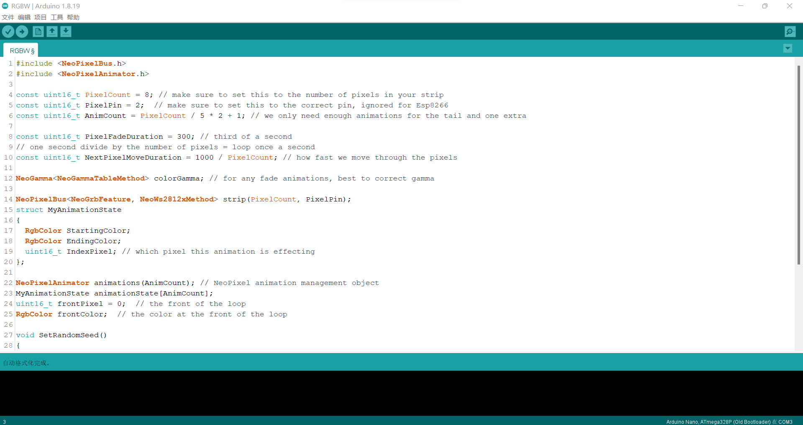
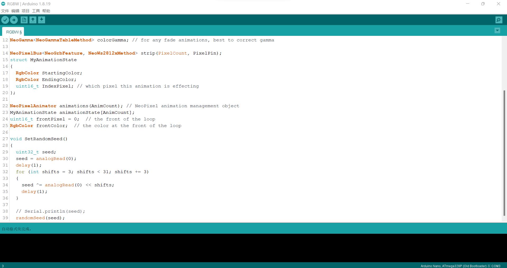
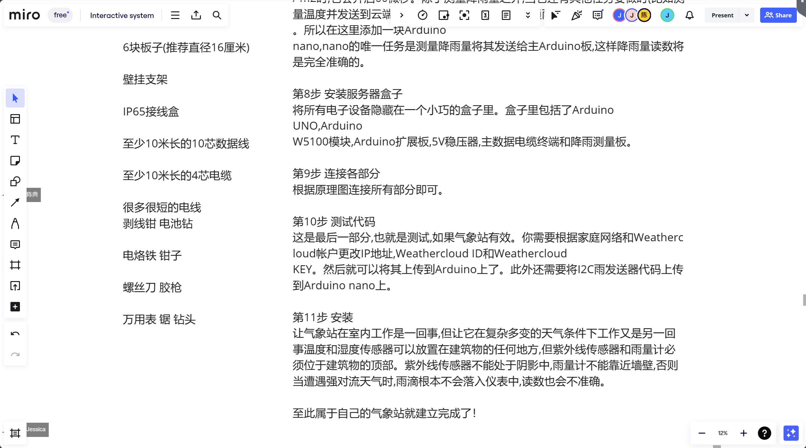

Learn open source hardware


Our group has a good personal style and cultural tradition. Based on the situation within the group, we highly respect the leader for his guidance and care. Therefore, our group is named the Blue Sky Save Team, abbreviated as BSST
Learn the Arduino
Innovate ——— Cooperation ——— Practice
Run water light program


Innovate ——— Cooperation ——— Practice
some open source projects




项目名字是用Ardiuno建一座高大上的Weathercloud气象站
优势：使用Ardiuno nano板，和之前硬件课上使用的板子相同，相对我们会更好地进行学习使用并操作。
劣势：目前接触到的硬件知识相对少，还需要进行大量的学习和实践尝试。同时，该项目只是一个监测气象的装置，我们还需要将其和我们的主题气候行动进行结合，作为艺术与科技专业的学生，我们还需要更加美观并且能引人深思的设计方案。